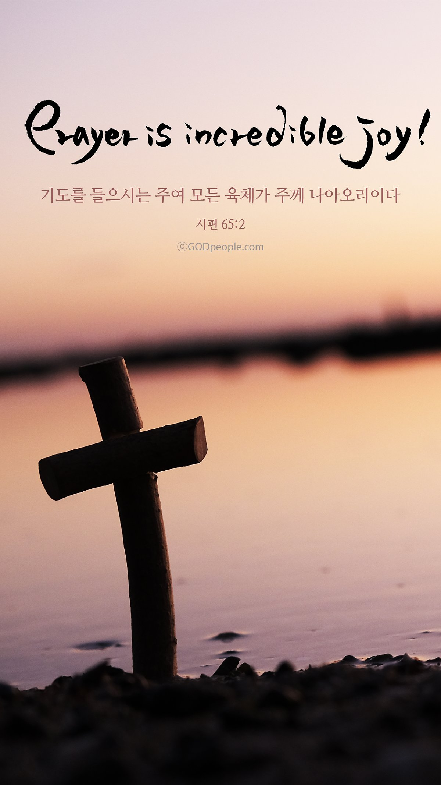

예수님의 향기를 전하는 사람들
기도의 여전사들
5k
꿈땅영일

기도의 여전사들
since 2020.2
한 사람이면 패하겠거니와 두 사람이면 맞설 수 있나니 세 겹 줄은 쉽게 끊어지지 아니하느니라(전4:12)
일천번제 기도운동 참여 일정
2020.12.3. am 6:30-7:00
2020.12.21. am 6:30-7:00
2020.12.22. am 6:00-7:00